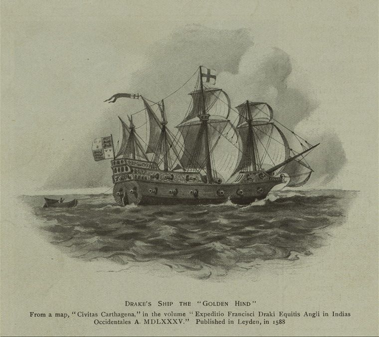
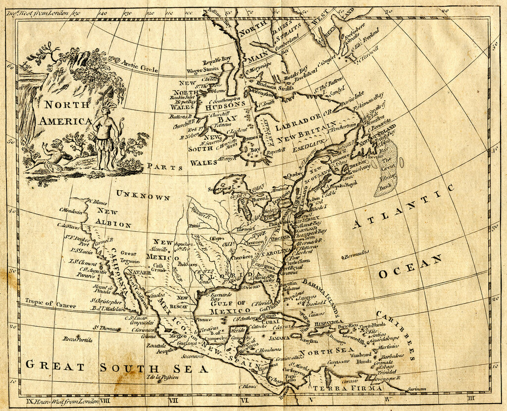
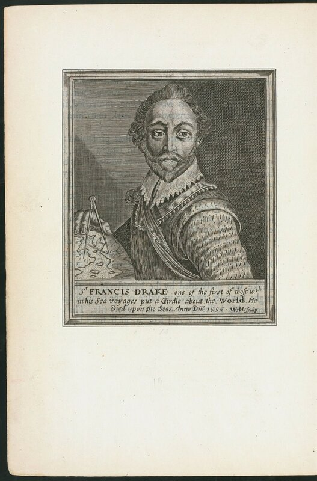
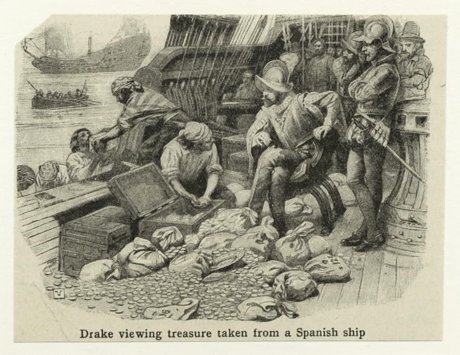

Что произошло после возвращения "Золотой лани" в Плимут?
Про Колумба, Магеллана
Про де-Гаму и других,
Всех героев океана,
Знаменитых и простых.
Н. М. Языков. Нептун

Галеон “Golden Hind”, Флагманский корабль экспедиции Дрейка. Sir Francis Drake Collection. The Miriam and Ira D. Wallach Division of Art, Prints and Photographs.
Кругосветное плавание Фрэнсиса Дрейка и сделанные в его ходе географические открытия воспринимались с некоторой долей скептицизма и подозрительности как современными ему географами, так и учеными последующих поколений вплоть до нашего времени. Что же смущало уважаемых мужей науки?
Если отбросить откровенные ляпы в популярных изданиях, то остается лишь два географических открытия, которые приписывают Дрейку: 1) установление того факта, что Магелланов пролив – не единственный южный проход между Атлантическим и Тихим океанами, т.е. Огненная Земля не является частью Южного континента – Terra Australis, и 2) открытие Нового Альбиона (Nova Albion), к северу от Калифорнии.

Карта Северной Америки Томаса Китчина с обозначением Нового Альбиона.
Второго открытия сейчас мы касаться не будем, попытаемся лишь выяснить, насколько основательным является первое утверждение.
Что здесь настораживает внимательных исследователей?
Во-первых, сравнительно позднее появление публичной информации о кругосветном плавании Дрейка. Дрейк вернулся в Плимут 26 сентября 1580 года. Незамедлительно его принимает королева Елизавета. Вот что об этом пишет в своем донесении королю Испании Филиппу II его посол в Лондоне Бернардино де Мендоса: Дрейк провел с королевой более 6 часов, представив ей дневник экспедиции с описанием всех событий за три года путешествия и очень большую карту (un diario de todo lo quele ha succedido en los tres anos y una gran carta). Письмо Мендосы было перехвачено англичанами и до испанского короля не дошло. Но нам важна констатация наличия журнала экспедиции и карты (правда, в английских переводах донесения испанского посла долгое время переводили выражение una gran carta как «очень длинное письмо»; недоразумение было исправлено только в 1977 году. К этой карте мы еще вернемся).
Однако указанные документы с результатами плавания Дрейка остаются в стенах королевского дворца и не доводятся до широкой публики. Для сравнения, плавание Колумба закончилось в 1492 году. Латинское издание его письма De insulis nuper inuentis к Казначею Арагона, «касающееся островов, открытых в Индийском море» было опубликовано в 1493 году, иллюстрированное гравюрами издание вышло в свет в 1494 году. Отчет о плавании Магеллана 1519-1521 гг. (завершенный после его смерти Хуаном Себастьяном де Элькано) был доведен до широкой публики вместе с перепиской секретаря Императора с его отцом практически сразу же после завершения экспедиции и в двух местах (в Риме – ноябрь 1523 г., и Кельне – январь 1524 г.) под названием De Moluccis Insulis. А более полная версия в изложении Антонио Пигафетты была распространена в нескольких рукописях, а затем и напечатана после 1526 года. О кругосветном плавании Дрейка "по горячим следам" не появилось ничего, что можно было бы считать документальным источником для освещения экспедиции.
На ум приходят две возможности : либо за время плавания не случилось ничего, о чем можно было бы оповестить просвещенный мир, либо, напротив, Дрейк открыл что-то такое, информацию о чем нужно было держать за семью печатями.
Первая версия совсем уж нереальна. Ведь плавание Дрейка вокруг света было вторым в истории и наверняка в его ходе моряки столкнулись с невиданными ранее явлениями и объектами. Поэтому на передний план выходит вторая гипотеза. Именно ее сообщает своему королю испанский посол Мендоса: секретность, окружающая подробности экспедиции Дрейка, может быть вызвана открытием крупного источника сокровищ.
Практически об этом же пишет знаменитый фламандский картограф Герард Меркатор в письме своему не менее знаменитому коллеге Ортелию 12 декабря 1580 года. Поблагодарив Ортелия за сообщение о новом кругосветном плавании, Меркатор пишет, что не видит иной причины для атмосферы секретности, окружившей экспедицию, кроме той, что английские моряки нашли очень богатый регион, никогда прежде не посещаемый европейцами.
Ни Меркатор, ни посол Мендоса не могли себе представить, что эта тайна связана с географическим открытием. Несмотря на наличие очень надежных и осведомленных источников в окружении королевы Англии, Мендоса ничего не знал об открытиях Дрейка, связанных с Огненной Землей. И лишь 20 апреля 1581 года он отправляет в Мадрид донесение, в котором, ссылаясь на сведения, полученные от капитана Винтера, пишет, что открыты «новые проливы, образованные островами». Винтер был капитаном корабля Елизавета, который входил в состав отряда Дрейка, но потерял связь со своим флагманом во время шторма и самостоятельно вернулся в Англию через Атлантический океан.
Со ссылкой на своего источника в окружении Дрейка, Мендоса также сообщает королю Филиппу, что невозможно воспрепятствовать проходу англичан в Тихий океан, лишь поставив свои корабли у входа в Магелланов пролив, так как «за Огненной землей находится открытое море». К сожалению, пишет Мендоса, его источник не смыслит в картографии и не умеет читать широты и долготы, но он, якобы, лично видел карту Дрейка и лично обсуждал с ним этот вопрос.

Фрэнсис Дрейк. Гавюра William Marshall, (сер. 17 в.)
На самом деле причиной секретности в отношении материалов экспедиции Дрейка могло стать стремление королевы скрыть каперские действия своего капитана в период относительно мирных отношений с Испанией. Если бы стало известно, что на борту «Золотой лани» было доставлено в Лондон более десяти тонн серебра в слитках, 101 фунт золота и другие драгоценные трофеи, добытые в результате захвата испанских кораблей, то шаткий мир с Испанией вряд ли удалось бы сохранить.

Дрейк, наблюдающий за погрузкой сокровищ, захваченных на испанском корабле. Library Mid-Manhattan Picture Collection
Впрочем, был ли Дрейк капером – большой вопрос; по крайней мере мне не удалось найти информации, получал ли он когда-либо каперское свидетельство, как бы оно в те времена ни называлось. Фактически действия Дрейка были откровенным пиратством в мирное время.
Продолжим обсуждение этой темы в следующий раз.